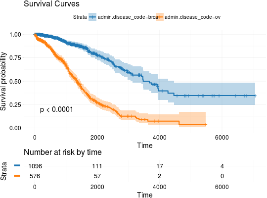

Plot Kaplan-Meier Estimates of Survival Curves for Survival Data
Plots Kaplan-Meier estimates of survival curves for survival data.
kmTCGA(x, times = "times", status = "patient.vital_status", explanatory.names = "1", main = "Survival Curves", risk.table = TRUE, risk.table.y.text = FALSE, conf.int = TRUE, return.survfit = FALSE, pval = FALSE, ...)
Arguments
- x
- A
data.framecontaining survival information. See survivalTCGA. - times
- The name of time variable.
- status
- The name of status variable.
- explanatory.names
- Names of explanatory variables to use in survival curves plot.
- main
- Title of the plot.
- risk.table
- Whether to show risk tables.
- risk.table.y.text
- Whether to show long strata names in legend of the risk table.
- conf.int
- Whether to show confidence intervals.
- return.survfit
- Should return survfit object additionaly to survival plot?
- pval
- Whether to add p-value of the log-rank test to the plot?
- ...
- Further arguments passed to ggsurvplot.
Issues
If you have any problems, issues or think that something is missing or is not clear please post an issue on https://github.com/RTCGA/RTCGA/issues.
See also
RTCGA website http://rtcga.github.io/RTCGA/articles/Visualizations.html.
Other RTCGA: RTCGA-package,
boxplotTCGA, checkTCGA,
convertTCGA, createTCGA,
datasetsTCGA, downloadTCGA,
expressionsTCGA, heatmapTCGA,
infoTCGA, installTCGA,
mutationsTCGA, pcaTCGA,
readTCGA, survivalTCGA,
theme_RTCGA
Examples
## Extracting Survival Data library(RTCGA.clinical) survivalTCGA(BRCA.clinical, OV.clinical, extract.cols = "admin.disease_code") -> BRCAOV.survInfo ## Kaplan-Meier Survival Curves kmTCGA(BRCAOV.survInfo, explanatory.names = "admin.disease_code", pval = TRUE)kmTCGA(BRCAOV.survInfo, explanatory.names = "admin.disease_code", main = "", xlim = c(0,4000))# first munge data, then extract survival info library(dplyr) BRCA.clinical %>% filter(patient.drugs.drug.therapy_types.therapy_type %in% c("chemotherapy", "hormone therapy")) %>% rename(therapy = patient.drugs.drug.therapy_types.therapy_type) %>% survivalTCGA(extract.cols = c("therapy")) -> BRCA.survInfo.chemo # first extract survival info, then munge data survivalTCGA(BRCA.clinical, extract.cols = c("patient.drugs.drug.therapy_types.therapy_type")) %>% filter(patient.drugs.drug.therapy_types.therapy_type %in% c("chemotherapy", "hormone therapy")) %>% rename(therapy = patient.drugs.drug.therapy_types.therapy_type) -> BRCA.survInfo.chemo kmTCGA(BRCA.survInfo.chemo, explanatory.names = "therapy", xlim = c(0, 3000), conf.int = FALSE)